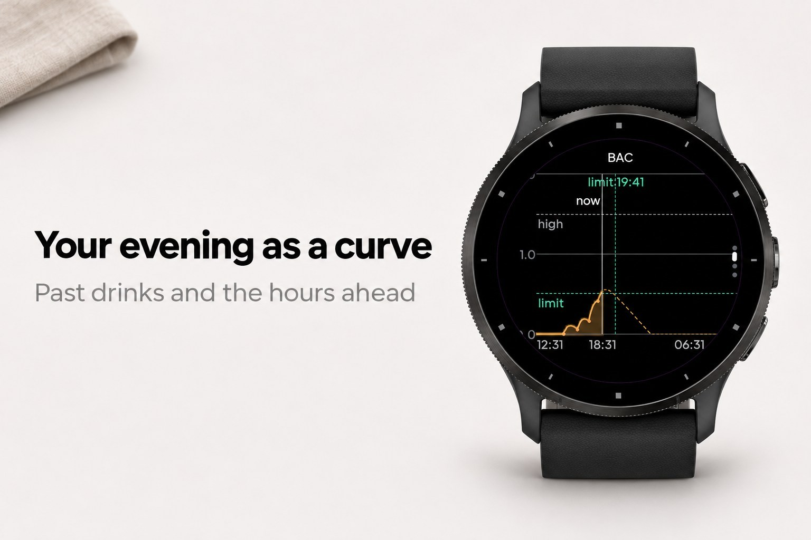
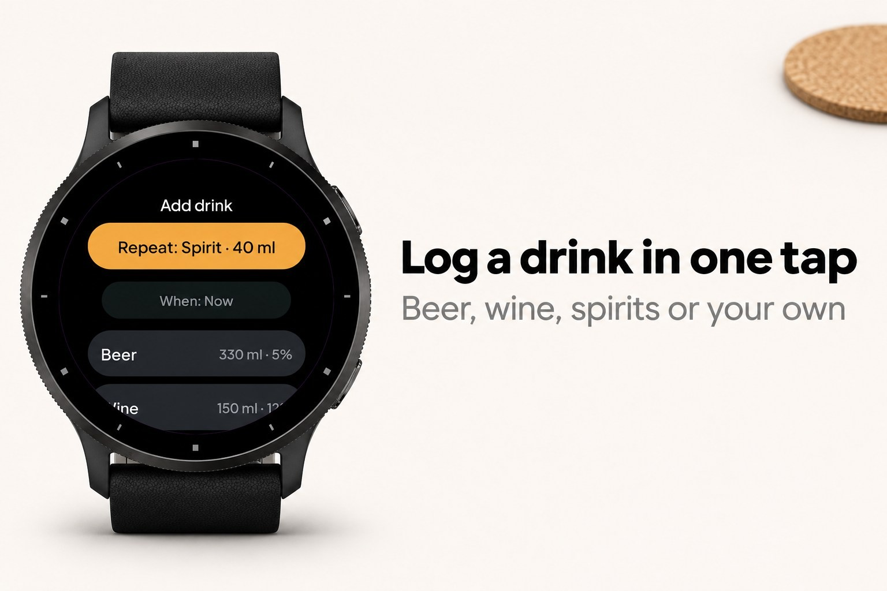
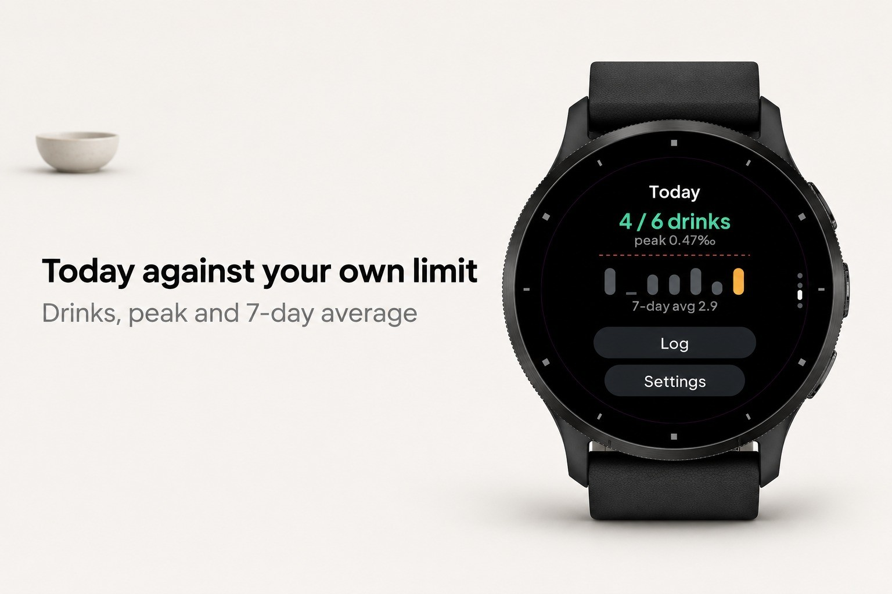
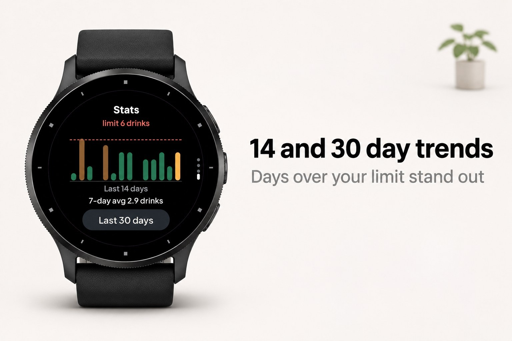

Sobr
Blood-alcohol estimate with the time you drop under your limit.





Sobr is a blood alcohol (BAC) tracker for your Garmin watch. Log a drink in one tap and Sobr shows your estimated BAC in real time, when it will drop back under your own personal threshold, and when you'll be fully sober — all computed with a real pharmacokinetic model, not just a drink counter.
How it works
Sobr models how alcohol actually moves through your body: absorption after each drink and a constant elimination rate, personalised with your weight, height and sex (Widmark method). The result is a live curve that rises while you drink and falls as your body clears the alcohol — including drinks that haven't fully hit you yet.
Log a drink in one tap
- Ready-made presets: beer, wine, spirits, cocktails, champagne and more
- One-tap repeat of your last drink, and your most-picked drinks sort to the top
- Forgot to log? Set how many minutes ago you had it
- Build your own shortcuts right on the watch (name, volume, strength)
- Custom entry for anything else: set ml and %
Know your evening
- Status ring with your live BAC in ‰ and green, orange and red zones
- The time you drop back under your threshold, right on the main screen, with the sober time below it
- Full graph: your evening so far plus the projected hours ahead, with your personal threshold and the exact moment you drop back under it
- Glance: check your level without even opening the app
It comes to you
- Automatic alert: your watch buzzes the moment your estimated BAC drops back under your own threshold — even with the app closed
- Morning recap: open Sobr the day after and get the full story — how many drinks, your peak BAC, and when you were sober again
Your threshold, your rules
The threshold is fully configurable and entirely personal. Set it to whatever matters to you — a cut-off for logging another round, a level below which you allow yourself tomorrow's workout, or simply zero. Sobr never tells you what a level means; it just tells you when you're under it.
Track your habits
- Today's log: tap a drink to change its time or size, or to delete it
- Set your own daily drink limit and see it on every screen
- 14-day and 30-day charts against your daily limit, and your whole year month by month
Yours, privately
- Works fully offline — no account, no phone app, no data leaves your watch
- Available in 16 languages
On older watches with little memory (fenix 5 and 6, Forerunner 245, 645 and 935, vívoactive 3, Venu Sq, Enduro) Sobr keeps its previous look.
Important
Sobr provides estimates only. Actual BAC varies from person to person and drink to drink. No amount of alcohol is safe for driving. Never use this app to decide whether you can drive or operate machinery — if you've been drinking, don't drive. Not a medical device.